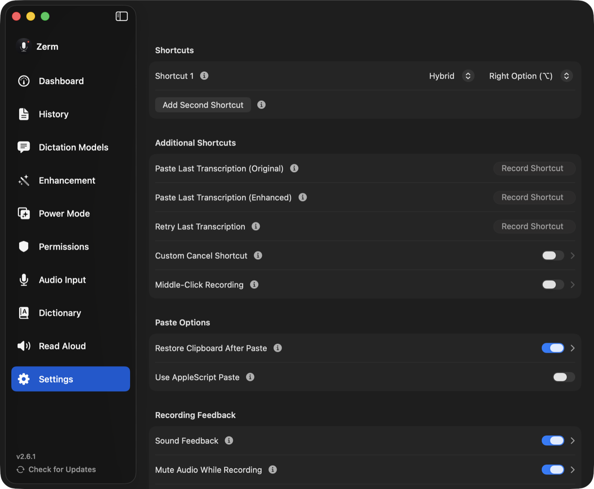

Reference
Keyboard shortcuts
Every shortcut Zerm offers — global triggers, recorder controls, and the ones that are unset until you choose them.
Zerm is driven from the keyboard. Nothing here is fixed: every shortcut on this page can
be rebound, and most start unset so they cannot collide with what you already use.

Dictation
You can configure two independent dictation shortcuts, each with its own trigger style.
A shortcut can be a bare modifier key — Right Option, Left Option, Right Command,
Right Control, Left Control, Right Shift, or Fn — held on its own. This is the reason
Zerm feels quick: no chord to remember, just a key your other hand is not using.
Or choose Custom and record any combination you like.
Each shortcut has a mode:
| Mode | Behaviour |
|---|---|
| Push to talk | Records while held. Release to stop. |
| Toggle | Press to start, press again to stop. |
| Hybrid | A tap toggles; holding past half a second becomes push to talk. |
Fn is handled specially. Pressing Fn together with another key — Fn+F1, Fn+F11,
brightness, volume — cancels the recording trigger, so binding Zerm to Fn does not break
your function row.
Middle click can also start and stop recording, with a configurable hold delay. Off
by default.
Read Aloud
Read Aloud has its own trigger, configured the same way — a bare modifier or a custom
combination. Unset by default. See read aloud.
While the recorder is visible
These only apply when the recorder is on screen, so they never interfere with the app
you are typing into.
| Shortcut | Action |
|---|---|
Esc |
Cancel. Nothing is transcribed, written, or saved. |
⌘E |
Toggle AI enhancement for this recording. |
⌘1 – ⌘0 |
Select one of the first ten enhancement prompts. |
⌘1 – ⌘0 |
Select one of the first ten Power Modes, when the recorder is showing them. |
A second, custom cancel shortcut can be assigned if Escape is taken.
See enhancement shortcuts for what the enhancement keys
do in detail.
Global shortcuts
All unset by default. Assign the ones you want.
| Action | What it does |
|---|---|
| Paste last transcription | Re-pastes the most recent transcript at your cursor. |
| Paste last enhancement | Re-pastes the enhanced version instead of the raw one. |
| Retry last transcription | Runs the last recording through the pipeline again. |
| Open history | Opens the history window from anywhere. |
| Quick add to dictionary | Adds a word to your dictionary without opening the app. |
Retry is the one to know about: it re-runs the audio you already captured, so
switching model or prompt after a disappointing result does not mean saying it all
again.
Power Mode shortcuts
Any Power Mode can be given its own global shortcut, which activates
that mode and starts recording in one press.
System-wide
Zerm registers Shortcuts actions, so dictation can be toggled from the Shortcuts app,
Spotlight, or anything else that can run one.